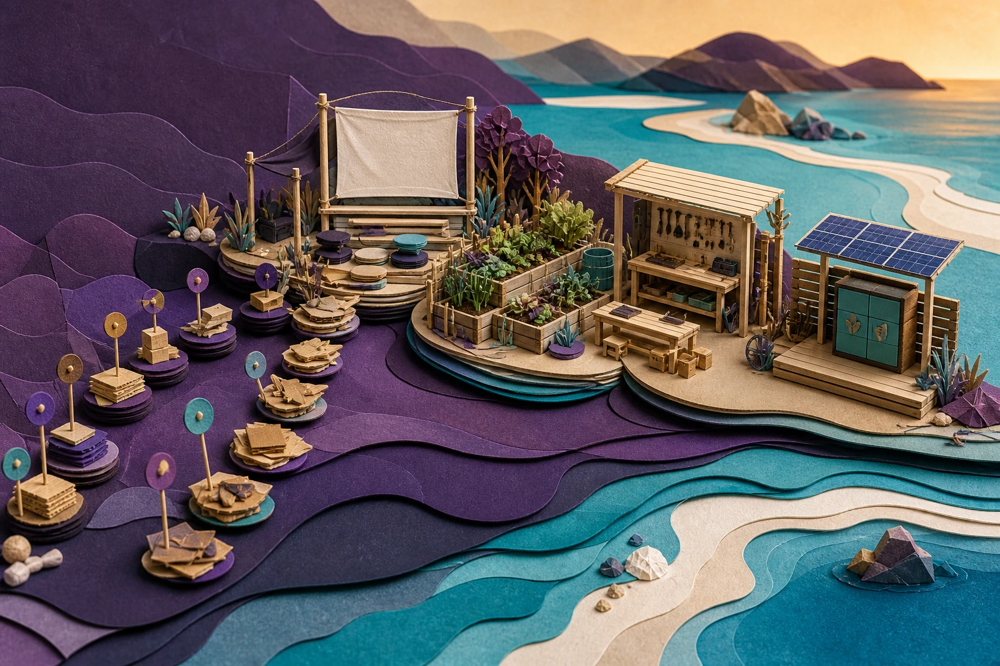

Projects are ordered by the next practical action. A small grant can fund planning, permission, a pilot or evidence; later grants, fundraising and contributions can fund delivery, assets and scale.

One useful layer can make the next one credible.Show every additional funding layer
No pathway yet?
Keep the project visible while the route is researched.
A missing match means the pathway needs more work. It does not mean the project or a small contribution should be excluded.